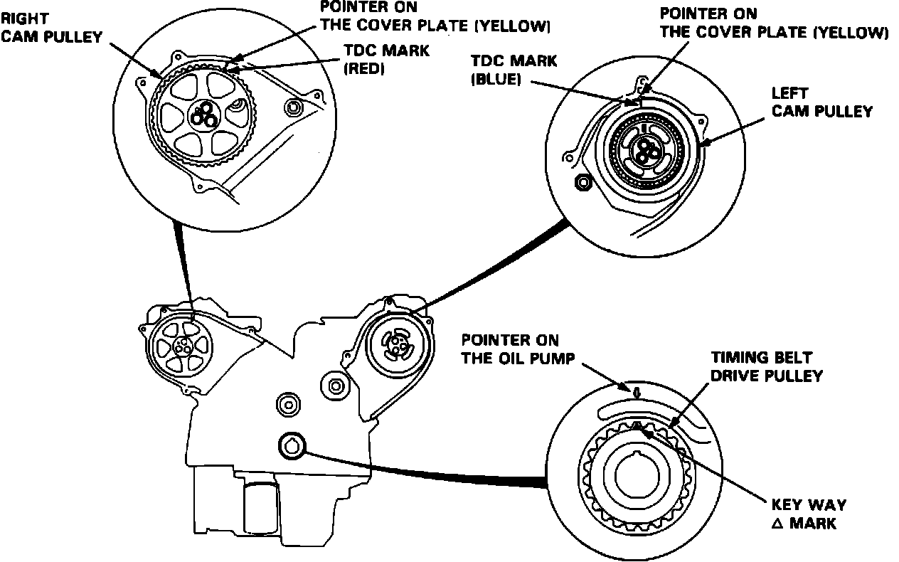
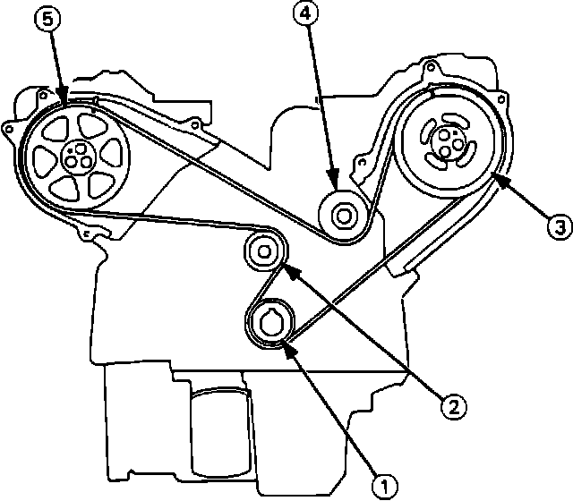

Installation
1. Install water pump with new O-rings and special bolts. Torque the 9 smaller bolts to 12 Nm (9 ft lb).2. Torque the 2 larger bolts to 22 Nm (16 ft lb).
3. Install the 2 mounting bolts to the thermostat case, and torque the bolts to 22 Nm (16 ft lb).
4. Position No. 1 piston at TDC or compression stroke.
Fig. 65 Setting TDC:

5. Align TDC mark on left cam pulley to left cover pointer, Fig. 65.
6. Align TDC mark on right cam pulley to right cover pointer.
7. Align the key way mark on the timing belt drive pulley to the pointer in the oil pump.
Fig. 66 Timing Belt Installation Sequence:

8. Install belt in sequence, Fig. 66.
9. Loosen the adjust bolt, and retighten it after tensioning the belt.
10. Rotate the crankshaft 5 or 6 turns clockwise so that the belt may position itself on the pulleys.
11. Set the No. 1 piston to TDC.
12. Rotate the crankshaft clockwise 9 teeth on camshaft pulley (the blue mark on crankshaft pulleys should line up with the pointer on lower cover.).
13. Loosen the timing belt adjusting bolt 180°.
14. Torque the adjusting bolt to 43 Nm (31 ft lb).
15. Install timing belt covers and torque bolts to 12 Nm (9 ft lb).
16. Install the crankshaft pulley and torque the special bolt to 240 Nm (174 ft lb).
17. Install dipstick tube and torque to 12 Nm (9 ft lb).
18. Install A/C adjusting pulley and torque bolt to 22 Nm (16 ft lb).
19. Install alternator, A/C, and power steering belts, and adjust belts to proper tension.
20. Install vacuum pipe bracket.
21. Install breather pipe.
22. Install engine electrial harness.
23. Add necessary coolant to fill cooling system.
24. Start engine and check for leaks.
25. Stop engine, allow to cool and add coolant if necessary.